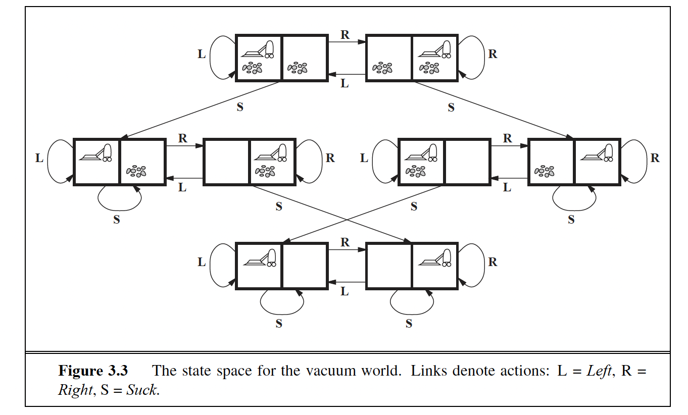
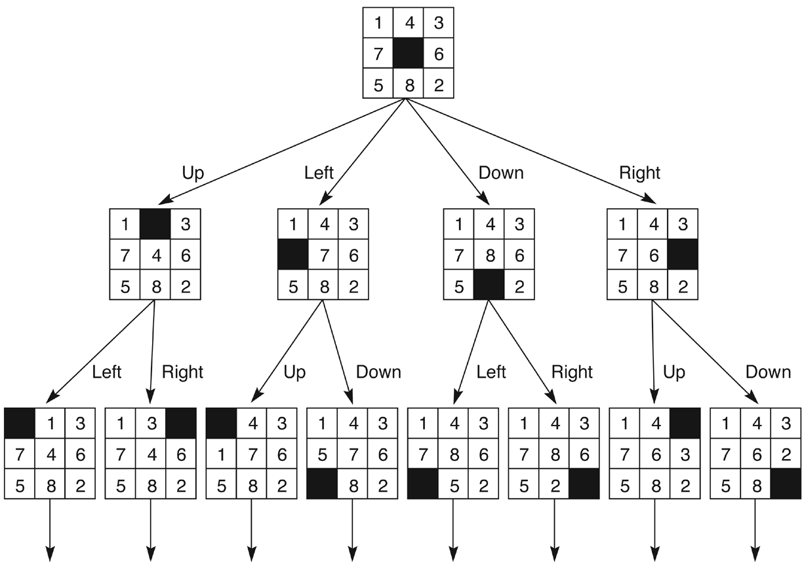
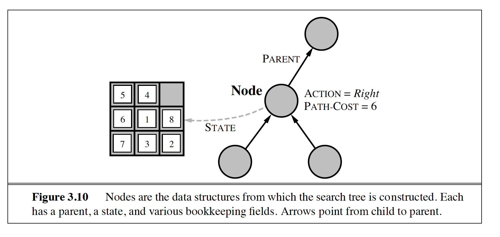

How to turn a real problem into a state space a computer can search.
Module 4 · Based on Russell & Norvig, AIMA Sections 3.1–3.3
Intermediate Search ~35 minb, d, mPrerequisites: Module 3 — Intelligent Agents. You should be comfortable with the idea of an agent acting in an environment to achieve goals.
In Module 3 we saw that a rational agent picks actions that maximize its performance measure. But most interesting goals can't be reached in one step — the agent must perform a sequence of actions. Could we just build a giant lookup table (a reactive policy) that tells the agent what to do in every possible circumstance? In practice, no:
The general approach is smarter: give the agent a model of the world and of its own actions, and let it simulate action sequences in that internal model until it finds one that reaches the goal. Thinking replaces trial-and-error in the real world — the agent "plans ahead" without ever moving.
Solving a problem computationally always requires: (a) a representation of the problem, and (b) algorithms that apply a strategy over that representation. This module builds the representation; Modules 5 and 6 supply the algorithms.
At the highest level, a problem-solving agent runs a simple loop — sense, plan, act, update:
The interesting part is formulate_plan: how does the agent find a sequence of actions that leads to the goal? Answer: it searches for one. First, though, we need a precise definition of what a "problem" is.
A search problem is defined formally by five components. Get these right and any search algorithm can attack the problem; get them wrong and even the best algorithm searches the wrong world.
| Component | What it specifies |
|---|---|
| Initial state | The state the agent starts in, e.g. In(Amman). |
| Actions | The set of actions (operators) applicable in a given state — what the agent can do from there. |
| Transition model | What each action does: RESULT(s, a) returns the state reached by performing action a in state s. |
| Goal test | Determines whether a given state is a goal state. Can be an explicit set of states or a property to satisfy. |
Path cost g(n) | A number assigned to each path, typically the sum of the step costs of the actions along it. |
Together, the initial state and the actions implicitly define the state space: the set of all states reachable from the initial state by any sequence of actions. The state space forms a graph whose nodes are states and whose edges are actions. A solution is a path through this graph from the initial state to a goal state; an optimal solution is a solution with the lowest path cost.
Two very different costs matter. The path cost is the quality of the solution found (e.g. kilometres driven). The search cost is the time and memory the algorithm spends finding it. There is a trade-off: computing the truly optimal solution may cost more than it's worth, so sometimes the rational move is to "satisfice" — accept a good-enough solution found cheaply.


Toy problems have crisp, exact formulations, which makes them perfect for comparing algorithms. Real-world problems (route finding, VLSI layout, robot navigation) are messier but follow the same recipe.
Our friend from Module 3, now as a search problem. Two squares, each either dirty or clean, and the agent in one of them: 2 positions × 4 dirt combinations = 8 states. Actions: Left, Right, Suck. Goal test: no dirt anywhere. Path cost: 1 per action. Small enough to draw the entire state-space graph on paper — try it.
Eight numbered tiles on a 3×3 board with one blank; slide tiles into the blank until the goal configuration appears:
| Component | 8-puzzle formulation |
|---|---|
| States | The location of each of the eight tiles and the blank. |
| Initial state | Any state can be the initial state. |
| Successor function | The blank moves Left, Right, Up or Down (when legal) — a neat trick: 4 operators instead of one per tile. |
| Goal test | The state matches the goal configuration. |
| Path cost | Each step costs 1, so the path cost is the length of the path. |
The 8-puzzle belongs to the family of sliding-block puzzles, which is NP-complete. The 8-puzzle has 9!/2 = 181,440 reachable states — searchable. The 15-puzzle has ~1013; the 24-puzzle ~1025. Brute force explodes fast, which is exactly why we'll need clever strategies and, later, heuristics.
Given a map (a graph of cities and road distances), find a path from one city to another — the classic example is the Romania map from AIMA: get from Arad to Bucharest. States are cities, actions are driving along a road, step cost is the road's length. This problem powers GPS navigation and airline planning — and it will be our running example when we meet A* in Module 6.
Problem. There are six glass boxes in a row, each with a lock. Each of the first five boxes holds a key that unlocks the next box in line; the last box holds a banana. You have the key to the first box, and you want the banana. Formulate this precisely enough to be implemented:
| Component | Formulation |
|---|---|
| Initial state | All six boxes locked; you hold only the key to box 1. |
| Actions | Unlock the next locked box using the key you currently hold (boxes are opened in sequence, box 1 → box 6). |
| Transition model | Unlocking box i yields the key inside it (which opens box i+1), or the banana if i is the last box. Boxes already opened stay open. |
| Goal test | The banana has been retrieved from the last box. |
| Path cost | Each unlock/retrieve step costs 1, so the path cost is the number of actions taken. |
Notice that problem formulation follows goal formulation: you must know the desired result (get the banana) before you can shape the sequence of actions that reaches it. A precise formulation like this is exactly what a search algorithm consumes — the topic of Modules 5 and 6.

STATE plus the bookkeeping fields PARENT, ACTION and PATH-COST. Arrows point from a child to its parent. (From the course slides.)How do we actually search? By building a search tree. The initial state becomes the root. We expand a state by applying the successor function to it, generating its children. The leaf nodes that have been generated but not yet expanded form the fringe (also called the frontier) — the set of candidates waiting to be explored. A search strategy is simply the rule for choosing which fringe node to expand next.
Every search algorithm in Modules 5 and 6 is this loop with a different strategy plugged in. BFS, DFS, uniform cost, A* — they differ only in which fringe node they pick.
The state space is a fixed graph of states; the search tree is a record of paths explored, and the same state can appear in it many times. A state space with just 2 states {A, B} connected both ways generates an infinite search tree: A → B → A → B → … via cyclic paths. Good search strategies avoid expanding repeated states — e.g. by remembering the states already visited.
A tree node is not just a state — it is bookkeeping wrapped around a state, so the solution path can be reconstructed once a goal is found:
| Field | Meaning |
|---|---|
STATE | The state in the state space that this node corresponds to. |
PARENT-NODE | The node in the tree that generated this one (follow parents back to the root to read off the solution). |
ACTION | The action applied to the parent to generate this node. |
PATH-COST g(n) | The cost of the path from the initial state to this node. |
DEPTH | The number of steps from the root to this node. |
With many strategies to choose from, we need yardsticks. Every strategy is judged on four criteria:
| Criterion | Question it answers |
|---|---|
| Completeness | Is the strategy guaranteed to find a solution if one exists? |
| Optimality | Does it find the highest-quality (lowest path cost) solution when there are several? |
| Time complexity | How long does it take? Measured in nodes generated during the search. |
| Space complexity | How much memory does it need? Measured in the maximum number of nodes stored. |
Time and space are expressed with three quantities:
b — the branching factor: the maximum number of successors of any noded — the depth of the shallowest goal nodem — the maximum path length in the state space (possibly infinite)Suppose b = 2 and the goal sits at depth d = 10. A naive algorithm that examines every node level by level generates 1 + 2 + 4 + … + 1024 = 2,047 nodes (about 211) — trivial. Push the goal to d = 20 and it becomes 2,097,151 nodes (about 221) — a thousand-fold increase for doubling the depth. This exponential growth in bd is why naive search is impractical for real problems, and why the choice of strategy matters so much.
Search strategies split into two big families, and the next two modules cover one each:
| Uninformed (blind) search | Informed (heuristic) search | |
|---|---|---|
| Knowledge used | Only the problem definition itself — solution cost is not taken into account when choosing what to expand. | Problem-specific knowledge that estimates the distance to the goal and guides the search efficiently. |
| Can it tell a promising state from a useless one? | No — it only knows goal vs. non-goal. | Yes — the heuristic ranks non-goal states. |
| Typical algorithms | Breadth-first, depth-first, uniform cost, iterative deepening… | Greedy best-first, A*… |
| Covered in | Module 5 | Module 6 |
Uninformed strategies are simple and general but pay the full exponential price. Informed strategies buy speed with knowledge — a good heuristic can shrink the effective search space dramatically.
Grab pen and paper — formulating problems by hand is the skill this module is about. Attempt each part before opening the solution.
You have a 4-litre jug and a 3-litre jug, an unlimited water supply, and no markings on the jugs. You can fill a jug, empty a jug, or pour from one jug into the other until the source is empty or the target is full. Goal: measure exactly 2 litres. Formulate this as a search problem: states, initial state, actions, goal test, path cost.
| Component | Formulation |
|---|---|
| States | Pairs (x, y) where x = litres in the 4L jug (0–4) and y = litres in the 3L jug (0–3). At most 5 × 4 = 20 states. |
| Initial state | (0, 0) — both jugs empty. |
| Actions | Fill the 4L jug → (4, y); fill the 3L jug → (x, 3); empty the 4L jug → (0, y); empty the 3L jug → (x, 0); pour 4L→3L: (x−t, y+t) with t = min(x, 3−y); pour 3L→4L: (x+t, y−t) with t = min(y, 4−x). |
| Goal test | x = 2 or y = 2. |
| Path cost | 1 per action; path cost = number of actions. |
One solution path: (0,0) → (0,3) → (3,0) → (3,3) → (4,2) — the 3L jug now holds exactly 2 litres, in 4 steps.
In some state space every state has exactly 3 successors, and the shallowest goal is at depth 4. In the worst case, how many nodes can a naive tree search generate before finding the goal?
Here b = 3 and d = 4. In the worst case the search generates every node down to and including depth 4:
That is the geometric sum (35 − 1)/2 = 121, i.e. O(bd). Notice how quickly this grows: at depth 8 it would already be 9,841 nodes, and at depth 16 over 64 million.
Give an example of a state space with only 2 states whose search tree is infinite. What is the standard fix?
Take states {A, B} with actions A→B and B→A. Starting from A, tree search can follow the cyclic path A → B → A → B → … forever, so the search tree is infinite even though the state space has just two states.
The fix: repeated-state checking — keep a closed list (explored set) of states already expanded and never expand a state twice. This turns tree search into graph search and bounds the tree by the size of the state space.
Why agents search instead of memorizing reactions; the five components of a problem formulation (initial state, actions, transition model, goal test, path cost); how the state space differs from the search tree built over it; the node structure and the fringe; and the four evaluation criteria — completeness, optimality, time and space — expressed with b, d and m. You've also seen why exponential blow-up makes naive search hopeless and how the uninformed/informed split organizes everything to come.
Next up: Module 5 — Uninformed Search: BFS, DFS, iterative deepening, uniform cost and friends.